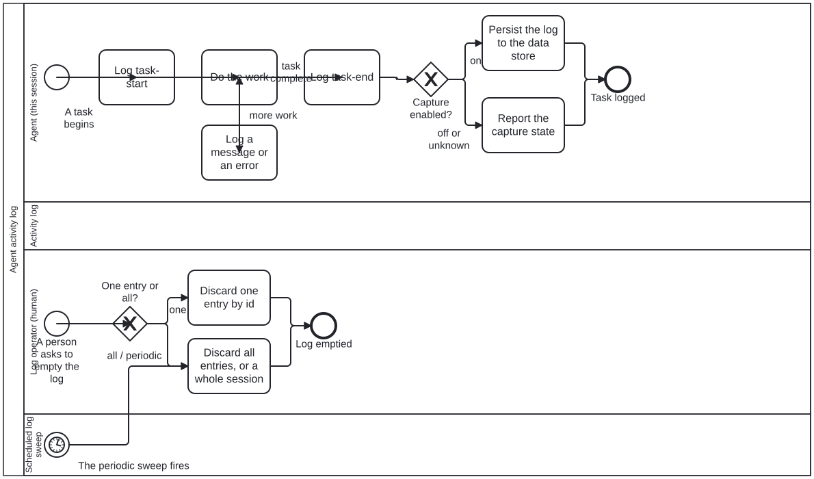

Generated from
cat-harness/processes/sdlc/activity-log.bpmnbygen-processes-viz.ts— do not edit here. All processes
Process_ActivityLog · advisory · 8 step(s)
What an agent writes down about its own run, and what a person can do with it afterwards: task starts and ends, messages and errors, persisted where somebody can read them.
You are in this process on every task, whether or not capture is on — the first gateway is what decides, and an agent that does not check it logs into nothing. The log operator’s lane is the other half: a person discards one entry or a whole session, and the scheduled sweep does neither on its own.
This is not the work plan. beans records WHAT is being worked on and survives the session; this records what happened during it. The two answer different questions and a reader reaching for one is badly served by the other.

| lane | role | what it does here |
|---|---|---|
| Agent (this session) | authoring-agent |
Brackets its own work with a start and an end entry rather than leaving either implied, and reads Gateway_Capture rather than assuming it: persisting when capture is on, but merely reporting the setting — never silently dropping the entry — when it is off or could not be determined. |
| Activity log | log |
— |
| Log operator (human) | user |
The only lane in this diagram that chooses: one entry by id, or everything. It was split out from a single conflated lane because a person’s choice and a scheduled sweep’s fixed program are not the same actor, which is why the sweep below has a lane of its own rather than sharing this one. |
| Scheduled log sweep | build-pipeline |
— |
Every one of the 8 step(s) is documented.
| step | lane | skill / sub-process | what it does |
|---|---|---|---|
Log task-startA_LogStart |
Agent (this session) | activity-log |
Write a task-start entry before touching anything: summary, actor, and the process/task/bean/branch/session it belongs to where they exist. role, process and task are optional on purpose — do not invent a lane for work done outside a process. |
Do the workA_DoWork |
Agent (this session) | — | The task itself. This diagram says nothing about how it is done; it only brackets it, so that a reader of the log can tell where one run of work began and ended. |
Log a message or an errorA_LogMessage |
Agent (this session) | activity-log |
Write a message or error entry whenever a later reader would need it. A command run goes in execution (command, exit code, where output went) — never the output itself, and never a secret, token or credential: capture on puts entries in git. |
Log task-endA_LogEnd |
Agent (this session) | activity-log |
Write a task-end entry, with the outcome in the detail. The step is the unit: an entry per step, not one when the whole process finishes, or every intermediate entry is lost. |
Persist the log to the data storeA_PersistLog |
Agent (this session) | activity-log |
Capture is explicitly on — by |
Report the capture stateA_ReportCaptureState |
Agent (this session) | activity-log |
Capture is off or unknown, so nothing is committed. Say which of the two it is: off is somebody’s decision, unknown means nobody could tell, and an agent that believes it has an audit trail when it has none acts on a false belief. |
Discard one entry by idA_EmptyOne |
Log operator (human) | activity-log |
Remove one entry by its stable id, with emptyLog({ id }). Logs are the one exception to the never-delete rule because an entry records no decision; the exception covers files that declare folio-log/v1, not the directory. |
Discard all entries, or a whole sessionA_EmptyAll |
Log operator (human) | activity-log |
Remove every entry, one session’s, or those before a date — emptyLog with { all }, { session } or { before }; there is no default selector. A file that will not parse is kept, and the result must say what was refused and why, not only what was removed. |
Every one of the 2 decision(s) is documented.
| decision | what decides it | branches |
|---|---|---|
Capture enabled?Gateway_Capture |
Asked after a task ends: is log capture switched on for this session? on persists the entry to the data store. off or unknown persists nothing and reports the capture state instead, so an unknown setting is said out loud rather than read as off. |
on → Persist the log to the data store off or unknown → Report the capture state |
One entry or all?Gateway_EmptyScope |
Asked when a person asks to empty the log: which entries? one discards a single entry by id; all / periodic discards every entry or a whole session, the branch a scheduled clean-up also takes. |
one → Discard one entry by id all / periodic → Discard all entries, or a whole session |